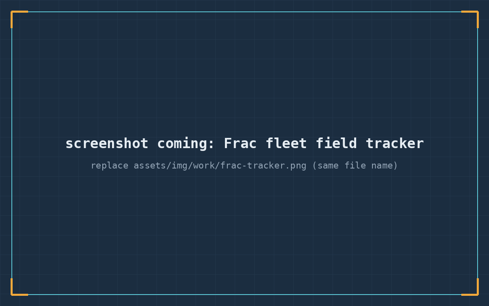

Frac fleet field tracker
Pump-down services company, 3 frac fleets
Stage data, fluid volumes, proppant, pressures and pump rates captured on location, with automated per-product pricing that produced customer-signed field tickets at the wellsite instead of retyped invoices.